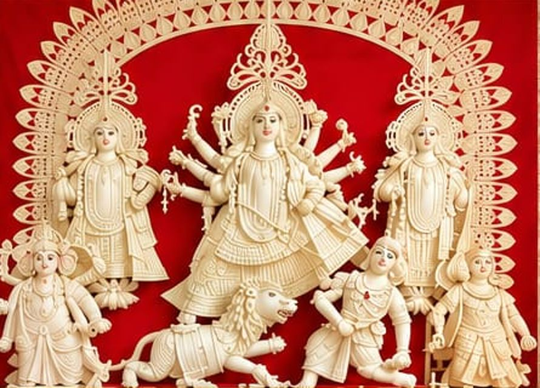

Friday16OctoberToday
Maha Sasthi
মহা ষষ্ঠী
Bodhon, the awakening. Maa's face is unveiled and the festival begins.
Evening4:30 PM

It gives us immense joy to invite you, along with your family and friends, to join us in the sacred celebration of Shri Shri Durga Puja at our residence. For nineteen autumns our home in Maple Ridge has filled with the dhak, the scent of dhuno, and the voices of neighbours who became family. Whether your Pujo memories come from Kolkata or Dhaka, Siliguri or Sylhet, Agartala, Guwahati, Jamshedpur or Delhi's Chittaranjan Park, there is a place for you at our Pujo.
Four days of worship, Bhog and adda, October 16 to 19, 2026.
Bodhon, the awakening. Maa's face is unveiled and the festival begins.
Nabapatrika is bathed and dressed, and the first Pushpanjali is offered.
The heart of the Puja: Ashtami Anjali in new clothes, and the most crowded Bhog of the year.
The last full day with Maa, closing with the sacred fire and a sea of red.
All times Pacific (Maple Ridge local time).
Bengalis from both sides of the border, and from every corner of the world, have made Maple Ridge home. Here we keep every ritual together, and every reason to laugh.
The goddess is invited home. Children crowd to the front for the first glimpse of her face.
Flowers and bel leaves in cupped hands, mantras repeated after the priest, then a toss of petals toward Maa.
Khichuri, labra, beguni and payesh, shared on long tables. Nobody leaves hungry.
A young girl is worshipped as the goddess. At the meeting of Ashtami and Navami, 108 lamps are lit and 108 lotuses offered.
Clay burners of smoking coconut husk and dhuno, held high and swung to the beat of the dhak.
The sacred fire, then married women smear sindoor on Maa and on each other, faces red and laughing, before the goodbye.
No Pujo begins until the dhak starts. The dhaki carries the big barrel drum on a shoulder strap, its top crowned with white kash-phool feathers, and plays it with two thin sticks. Beside him, the kashor, a flat bronze plate struck with a stick, keeps a bright, steady clang under every beat.
The dhak sets the pace for Aarati and drives the Dhunuchi naach until the room is full of smoke and laughter.